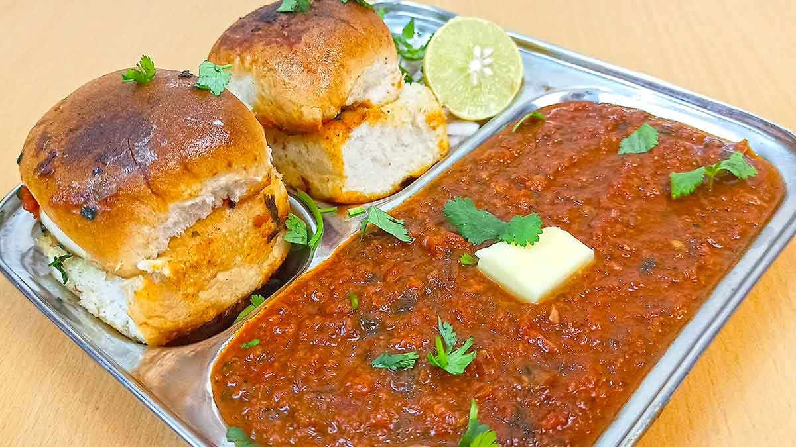

Pav Bhaji

Description
Pav Bhaji is a hearty, delightsome, flavorful meal of mashed vegetable gravy with fluffy soft buttery dinner rolls served with a side of crunchy piquant onions, tangy lemon and herby coriander. Make this super delicious popular street food following my video and step-by-step guide. You will love this pav bhaji recipe for its Mumbai style flavors. I share the traditional method of making Mumbai Pav Bhaji and a quick Instant Pot recipe.
Ingredients
- 2 tablespoon oil, divided
- 1 large onion, grated
- 3/4 teaspoon salt, or as needed
- 5 cloves garlic, grated
- 2 teaspoons pav bhaji masala, divided
Steps:
- Heat 1 tablespoon oil in a saucepan over medium heat. Add onion and 1/4 teaspoon salt; fry until browned, 5 to 8 minutes. Add garlic; cook and stir for 4 minutes. Pour in 1 cup water. Add 1 teaspoon pav bhaji masala and 1/2 teaspoon salt. Bring to a boil. Reduce heat and simmer until flavors combine, about 10 minutes.
- Add tomatoes, potatoes, and corn to the saucepan. Season with chile powder, coriander, and ginger. Bring to a boil. Reduce heat and simmer for 15 minutes. Mash curry gently with the back of a wooden spoon or spatula. Simmer for 10 minutes more. Taste and adjust salt. Add 1/2 teaspoon pav bhaji masala and lemon juice. Mash slightly again.
- Add 1/4 to 1/2 cup water to give curry a runny consistency. Add remaining 1 tablespoon oil and butter; stir until butter is melted. Divide into serving bowls and sprinkle remaining pav bhaji masala on top.